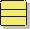
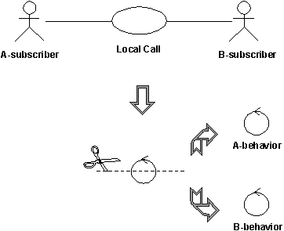

Artifacts >
Artifacts >
 Analysis & Design Artifact Set >
Analysis & Design Artifact Set >
 {More Analysis & Design Artifacts} >
Analysis Model... >
Analysis Class >
{More Analysis & Design Artifacts} >
Analysis Model... >
Analysis Class >
 Guidelines
Guidelines
Artifacts >
Analysis & Design Artifact Set >
{More Analysis & Design Artifacts} >
Analysis Model... >
Analysis Class >
Guidelines
Guidelines:
|
 Analysis Class |
Analysis classes represent an early conceptual model for ‘things in the system which have responsibilities and behavior’. They eventually evolve into classes and subsystems in the Design Model. |
Analysis classes may be stereotyped as one of the following:
Apart from giving you more specific process guidance when finding classes, this stereotyping results in a robust object model because changes to the model tend to affect only a specific area. Changes in the user interface, for example, will affect only boundary classes. Changes in the control flow will affect only control classes. Changes in long-term information will affect only entity classes. However, these stereotypes are specially useful in helping you to identify classes in analysis and early design. You should probably consider using a slightly different set of stereotypes in later phases of design to better correlate to the implementation environment, the application type, and so on.
A boundary class is a class used to model interaction between the system's surroundings and its inner workings. Such interaction involves transforming and translating events and noting changes in the system presentation (such as the interface).
Boundary classes model the parts of the system that depend on its surroundings. Entity classes and control classes model the parts that are independent of the system's surroundings. Thus, changing the GUI or communication protocol should mean changing only the boundary classes, not the entity and control classes.
Boundary classes also make it easier to understand the system because they clarify the system's boundaries. They aid design by providing a good point of departure for identifying related services. For example, if you identify a printer interface early in the design, you will soon see that you must also model the formatting of printouts.
Common boundary classes include windows, communication protocols, printer interfaces, sensors, and terminals. You do not have to model routine interface parts, such as buttons, as separate boundary classes if you are using a GUI builder. Generally the entire window is the finest grained boundary object. Boundary classes are also useful for capturing interfaces to possibly nonobject oriented API's, such as legacy code.
You should model boundary classes according to what kind of boundary they represent. Communication with another system and communication with a human actor (through a user interface) have very different objectives. During user-interface modeling, the most important concern is how the interface will be presented to the user. During system-communication modeling, the most important concern is the communication protocol.
A boundary object (an instance of a boundary class) can outlive a use case instance if, for example, it must appear on a screen between the performance of two use cases. Normally, however, boundary objects live only as long as the use case instance.
A boundary class intermediates the interface to something outside the system. Boundary objects insulate the system from changes in the surroundings (changes in interfaces to other systems, changes in user requirements, etc.), keeping these changes from affecting the rest of the system.
A system may have several types of boundary classes:
Boundary classes representing the user interface may exist from user-interface modeling activities; where appropriate, re-use these classes in this activity. In the event that user-interface modeling has not been done, the following discussion will aid in finding these classes.
There is at least one boundary object for each use-case actor-pair. This object can be viewed as having responsibility for coordinating the interaction with the actor. This boundary object may have subsidiary objects to which it delegates some of its responsibilities. This is particularly true for window-based GUI applications, where there is typically one boundary object for each window, or one for each form.
Make sketches, or use screen dumps from a user-interface prototype, that illustrate the behavior and appearance of the boundary objects.
Only model the key abstractions of the system; do not model every button, list and widget in the GUI. The goal of analysis is to form a good picture of how the system is composed, not to design every last detail. In other words, identify boundary classes only for phenomena in the system or for things mentioned in the flow of events of the use-case realization. See also Guidelines: Boundary Class (Modeling the User Interface).
A boundary class which communicates with an external system is responsible for managing the dialogue with the external system; it provides the interface to that system for the system being built.
Example
In an Automated Teller Machine, withdrawal of funds must be verified through the ATM Network, an actor (which in turn verifies the withdrawal with the bank accounting system). An object called ATM Network Interface can be identified to provide communication with the ATM Network.
The interface to an existing system may already be well-defined; if it is, the responsibilities should be derived directly from the interface definition. If a formal interface definition exists, it may be reverse engineered and we need not formally define it here; simply make note of the fact that the existing interface will be reused during design.
The system may contain elements that act as if they were external (change value spontaneously without any object in the system affecting them), such as sensor equipment. Although it is possible to represent this type of external device using actors, users of the system may find doing so "confusing", as it tends to put devices and human actors on the same "level". Once we move away from gathering requirements, however, we need to consider the source for all external events and make sure we have a way for the system to detect these events.
If the device is represented as an actor in the use-case model, it is easy to justify using a boundary class to intermediate communication between the device and the system. If the use-case model does not include these "device-actors", now is the appropriate time to add them, updating the Supplementary Descriptions of the Use Cases where appropriate.
For each "device-actor", create a boundary class to capture the responsibilities of the device or sensor. If there is a well-defined interface already existing for the device, make note of it for later reference during design.
A control class is a class used to model control behavior specific to one or a few use cases. Control objects (instances of control classes) often control other objects, so their behavior is of the coordinating type. Control classes encapsulate use-case specific behavior.
The behavior of a control object is closely related to the realization of a specific use case. In many scenarios, you might even say that the control objects "run" the use-case realizations. However, some control objects can participate in more than one use-case realization if the use-case tasks are strongly related. Furthermore, several control objects of different control classes can participate in one use case. Not all use cases require a control object. For example, if the flow of events in a use case is related to one entity object, a boundary object may realize the use case in cooperation with the entity object. You can start by identifying one control class per use-case realization, and then refine this as more use-case realizations are identified and commonality is discovered.
Control classes can contribute to understanding the system because they represent the dynamics of the system, handling the main tasks and control flows.
When the system performs the use case, a control object is created. Control objects usually die when their corresponding use case has been performed.
Note that a control class does not handle everything required in a use case. Instead, it coordinates the activities of other objects that implement the functionality. The control class delegates work to the objects that have been assigned the responsibility for the functionality.
Control classes provide coordinating behavior in the system. The system can perform some use cases without control objects (just using entity and boundary objects)—particularly use cases that involve only the simple manipulation of stored information.
More complex use cases generally require one or more control classes to coordinate the behavior of other objects in the system. Examples of control objects include programs such as transaction managers, resource coordinators, and error handlers.
Control classes effectively de-couple boundary and entity objects from one another, making the system more tolerant of changes in the system boundary. They also de-couple the use-case specific behavior from the entity objects, making them more reusable across use cases and systems.
Control classes provide behavior that:
The flow of events of a use case defines the order in which different tasks are performed. Start by investigating if the flow can be handled by the already identified boundary and entity classes. For simple flows of events which primarily enter, retrieve and display, or modify information, a separate control class is not usually justified; the boundary classes will be responsible for coordinating the use case.
The flows of events should be encapsulated in a separate control class when it is complex and consists of dynamic behavior that may change independently from the interfaces (boundary classes) or information stores (entity classes) of the system. By encapsulating the flows of events, the same control class can potentially be re-used for a variety of systems which may have different interfaces and different information stores (or at least the underlying data structures).
Example: Managing a Queue of Tasks
You can identify a control class from the use case Perform Task in the Depot-Handling System. This control class handles a queue of Tasks, ensuring that Tasks are performed in the right order. It performs the next Task in the queue as soon as suitable transportation equipment is allocated. The system can therefore perform several Tasks at the same time.
The behavior defined by the corresponding control object is easier to describe if you split it into two control classes, Task Performer and Queue Handler. A Queue Handler object will handle only the queue order and the allocation of transportation equipment. One Queue Handler object is needed for the whole queue. As soon as the system performs a Task, it will create a new Task Performer object, which will perform the Task. We thus need one Task Performer object for each Task the system performs.

Complex classes should be divided along lines of similar responsibilities
The principal benefit of this split is that we have separated queue handling responsibilities (something generic to many use cases) from the specific activities of task management, which are specific to this use case. This makes the classes easier to understand and easier to adapt as the design matures. It also has benefits in balancing the load of the system, as many Task Performers can be created as necessary to handle the workload.
To simplify changes, encapsulate the main flow of events and alternate flows of events in different control classes. If alternate and exception flows are completely independent, separate them as well. This will make the system easier to extend and maintain over time.
Control classes may also need to be divided when several actors use the same control class. By doing this, we isolate changes in the requirements of one actor from the rest of the system. In cases where the cost of change is high or the consequences dire, you should identify all control classes which are related to more than one actor and divide them. In the ideal case, each control class should interact (via some boundary object) with one actor or none at all.
Example: Call Management
Consider the use case Local Call. Initially, we can identify a control class to manage the call itself.

The control class handling local phone calls in a telephone system can quickly be divided into two control classes, A-behavior and B-behavior, one for each actor involved.
In a local phone call, there are two actors: A-subscriber who initiates the call, and B-subscriber who receives the call. The A-subscriber lifts the receiver, hears the dial tone, and then dials a number of digits, which the system stores and analyzes. When the system has received all the digits, it sends a ringing tone to A-subscriber, and a ringing signal to B-subscriber. When B-subscriber answers, the tone and the signal stop, and the conversation between the subscribers can begin. The call is finished when both subscribers hang up.
Two behaviors must be controlled: What happens at A-subscriber’s place and what happens at B-subscriber’s place. For this reason, the original control object was split into two control objects, A-behavior and B-behavior.
You do not have to divide a control class if:
An entity class is a class used to model information and associated behavior that must be stored. Entity objects (instances of entity classes) are used to hold and update information about some phenomenon, such as an event, a person, or some real-life object. They are usually persistent, having attributes and relationships needed for a long period, sometimes for the life of the system.
An entity object is usually not specific to one use-case realization; sometimes, an entity object is not even specific to the system itself. The values of its attributes and relationships are often given by an actor. An entity object may also be needed to help perform internal system tasks. Entity objects can have behavior as complicated as that of other object stereotypes. However, unlike other objects, this behavior is strongly related to the phenomenon the entity object represents. Entity objects are independent of the environment (the actors).
Entity objects represent the key concepts of the system being developed. Typical examples of entity classes in a banking system are Account and Customer. In a network-handling system, examples are Node and Link.
If the phenomenon you wish to model is not used by any other class, you can model it as an attribute of an entity class, or even as a relationship between entity classes. On the other hand, if the phenomenon is used by any other class in the design model, you must model it as a class.
Entity classes provide another point of view from which to understand the system because they show the logical data structure, which can help you understand what the system is supposed to offer its users.
Entity classes represent stores of information in the system; they are typically used to represent the key concepts the system manages. Entity objects are frequently passive and persistent. Their main responsibilities are to store and manage information in the system.
A frequent source of inspiration for entity classes are the Glossary (developed during requirements) and a business-domain model (developed during business modeling, if business modeling has been performed).
The following are allowable:
The following are allowable:
Entity classes should only be the source of associations (communicate or subscribe) to other entity classes. Entity class objects tend to be long-lived; control and boundary class objects tend to be short-lived. It is sensible from an architectural viewpoint to limit the visibility that an entity object has of its surroundings, that way, the system is more amenable to change.
| From\To (navigability) |
Boundary |
Entity |
Control |
|
Boundary |
communicate |
communicate
subscribe |
communicate |
|
Entity |
|
communicate
subscribe |
|
|
Control |
communicate |
communicate
subscribe |
communicate
|
Valid Association Stereotype Combinations
|
Rational Unified
Process
|